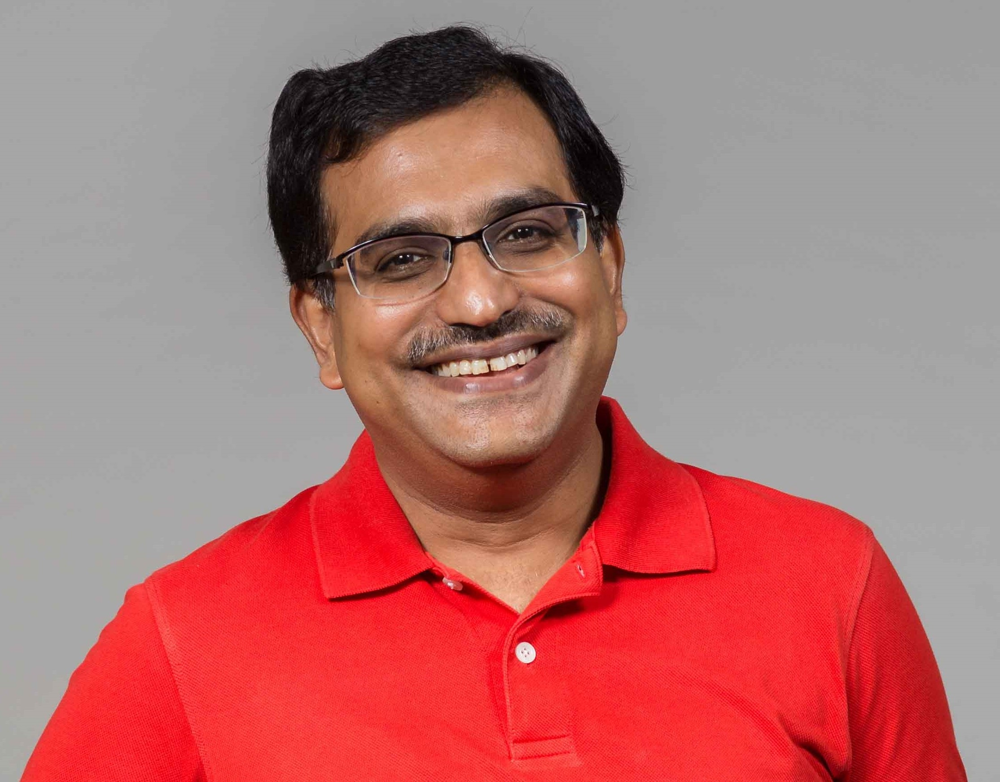
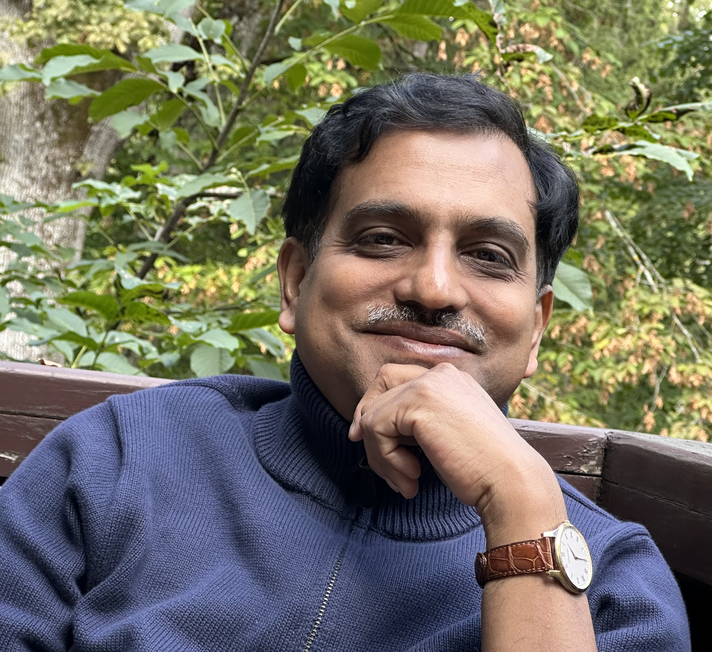
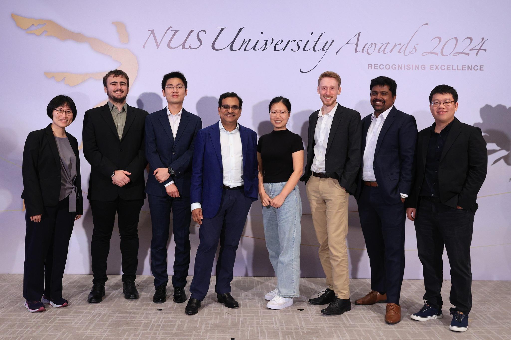
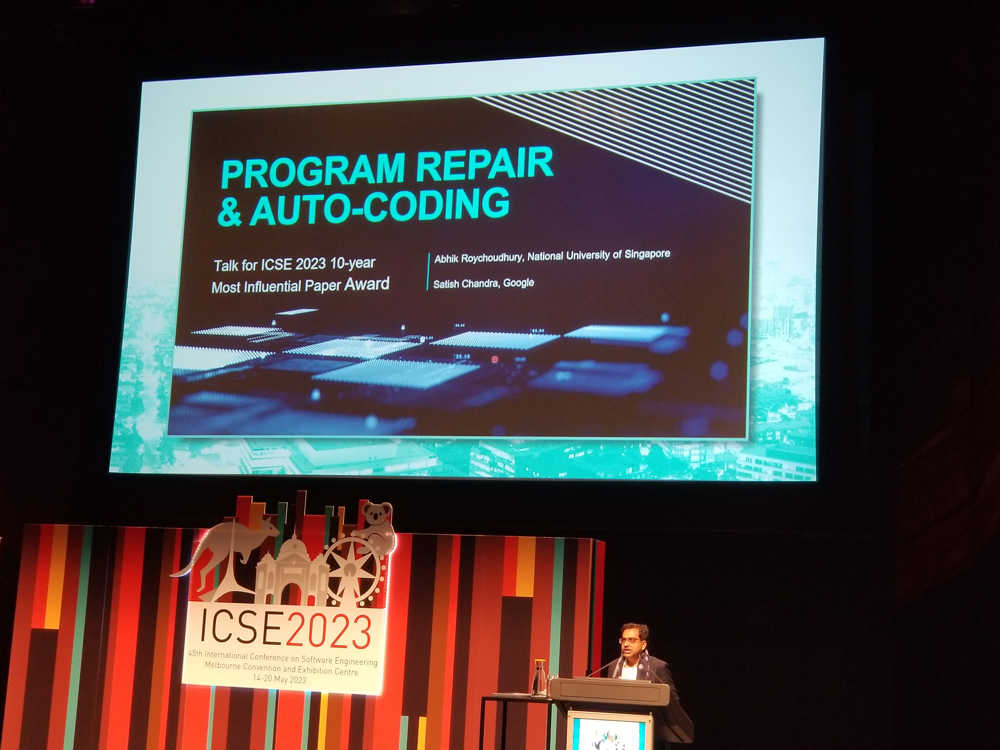

|  |
|

|
[CV]
[TSS Group]
[SPARTAN Effort]
[Google Scholar]
[PAPERS]
[SERVICE]
[TEACHING]
Latest
Bio
Abhik Roychoudhury is Provost's Chair Professor of Computer Science at
the National University of Singapore (NUS),
where he leads a research team on
Trustworthy and Secure Software (TSS). He is Senior Advisor at SonarSource, subsequent to the
acquisition
of his spinoff AutoCodeRover on AI agents for coding.
He received his PhD in Computer Science
from the Stony Brook University in 2000,
and has been a faculty member at NUS School of Computing since 2001.
Abhik's group at NUS has focused on symbolic program analysis, along with
applications of program analysis to areas such as computer security, agentic AI or cyber-physical systems.
These works have been honored with various awards including an
International Conference on Software Engineering (ICSE) Most Influential Paper Award
(Test-of-time award) for symbolic analysis based program repair,
IEEE New Directions Award 2022 (jointly with Cristian Cadar) for
contributions to symbolic execution.
Research Interests
Abhik was the inaugural recipient of the NUS Outstanding Graduate Mentor Award.
Doctoral students graduated from his research team have taken up faculty positions in many top academic institutions,
and they have gone on to receive many prestigious early career awards (including ACM-W Rising Star Award given to only one
female faculty member in Computing). Abhik has
served the software engineering research community in various capacities including as chair of the major
conferences (ICSE and FSE), as well as chair of the
FSE steering committee.
He is the current Editor-in-Chief of the
ACM Transactions on Software Engineering and Methodology (TOSEM), and
a member of the editorial board of Communications of the ACM.
Abhik is a Fellow of the ACM, recognized for contributions to
automated program repair and fuzz testing.
Software testing and analysis, AI agents, Automatic Programming, Program Repair, Software Security, Trustworthy systems.
Oct / Nov 2025: Starting a new research program AI agents for Program Reasoning co-led with Cristian Cadar ! Contact me for PhD and postdoc positions!!
June 2025: ACM Fellow 2024, at ACM Awards Banquet
Feb 2025: AutoCodeRover, our AI Software Engineer embodying agentic
AI and a NUS spinoff, is acquired by SonarSource. Following is a group photo
of the core AutoCodeRover team taken on the day after acquisition:
Haifeng Ruan,
Yuntong Zhang,
Ridwan Shariffdeen,
Martin Mirchev and myself.
PRESS RELEASE,
SAMPLE NEWS
Honored to be the inaugural recipient of the National University of Singapore (NUS) Outstanding Graduate Mentor Award in 2024. Following is a photo taken at the award ceremony with past and present members of TSS group.
Views
Talk on the journey behind AutoCodeRover Large Language Model agent, 2025
Most Influential Paper Award talk at International Conference on Software Engineering (ICSE) 2023 for ICSE 2013 paper, see VIDEO.

"Beyond" the PhD thesis, Public Lecture organized by NUS Graduate School, 2025
Lecture given as the inaugural recipient of the NUS Outstanding Graduate Mentor Award.
Distinguished Lecture at Max-Planck Institute, 2024.
Similar talks were given at other venues.
Overview talk on Fuzz Testing at Dagstuhl Seminar, November 2021.
Similar talk was given at an Education Class in Embedded Systems Week 2022 , see
VIDEO
Reflection
In our lives as educator ...
"
Here is one of my favorites, with a nuanced connotation in terms of research ...